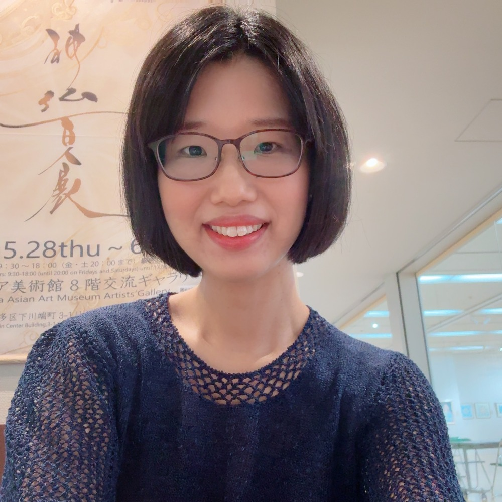

About
描きたい、作りたい、という気持ちが自分を導いてくれる。
そう信じて、ソフトパステルから始まり、水彩、アクリル、そしてLive2Dのモデリングまで、その時々で画材や手段を選んで形にしてきました。
内側にある想いを、まず現実の形にしてみることを大切にしています。
福岡を拠点に制作しています。
趣味は家庭菜園と、篠笛・さざなみドラムの演奏です。
これからは、アートと音楽を紡ぐ世界観も表現していきたいです。
資格
パステル和（NAGOMI）アート 正インストラクター
日本パステルホープアート協会／2011年取得

Contact
原画・オーダーアート、Live2Dモデリングのご依頼は、現在受付の準備中です。
お仕事のご相談は、フォームからお送りください。